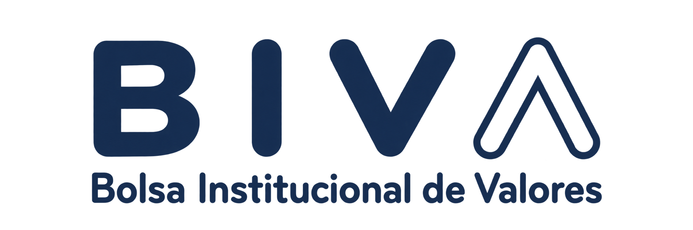
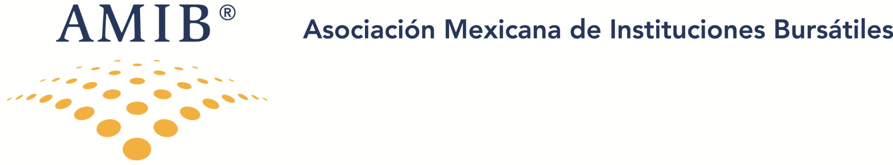

01 / La visión de conjunto
El discurso
Un recorrido desde el uso de modelos hasta el diseño de organizaciones capaces de actuar con nuevas formas de inteligencia, y las responsabilidades que asume su liderazgo.
Inteligencia artificial · Liderazgo financiero
Comprender qué preguntas abre cada forma de inteligencia y cómo combinarlas para tomar el mando del plan de negocio de IA.
Agradecemos a BIVA y AMIB su apoyo a este encuentro y a la conversación sobre el futuro de las instituciones financieras.


Para acompañar el encuentro
El discurso presenta el argumento ejecutivo y el manual desarrolla las seis partes centrales. Después, la lección 0 establece los fundamentos para profundizar en las lecciones 1–3 con infografías, presentaciones, monografías y notebooks. Los seis podcasts acompañan las lecciones centrales.
01 / La visión de conjunto
Un recorrido desde el uso de modelos hasta el diseño de organizaciones capaces de actuar con nuevas formas de inteligencia, y las responsabilidades que asume su liderazgo.
02 / El desarrollo de las ideas
Seis capítulos que desarrollan las lecciones 1–3: capacidades, procesos, agentes, autonomía, adaptación y estrategia institucional. La lección 0 tiene sus propios materiales complementarios, accesibles más abajo.
Una idea atraviesa todo el recorrido: la capacidad técnica no concede autoridad. La institución define qué se delega, bajo qué condiciones y quién responde por sus consecuencias.
Después de la conferencia
Después del discurso y el manual, comience por la lección 0. En cada parte, consulte la infografía, avance con la presentación y la monografía y explore los mecanismos en Colab. No se requiere programación para seguir el argumento ejecutivo.
El propedéutico · Dos partes para construir el criterio
Las nuevas generaciones amplían el repertorio de preguntas. Su mayor valor aparece cuando se integran con las anteriores en constelaciones de inteligencia.
Lección 0 · Parte 1
Un mismo problema financiero permite recorrer estadística, econometría, aprendizaje automático, IA generativa y agentes. Se amplía lo que podemos investigar: relaciones, probabilidades, patrones, representaciones, significado y juicio organizado.
¿Qué pregunta de negocio queremos responder y qué capacidad requiere?
Laboratorio: 500 empresas sintéticas, seis perfiles de inversión y ocho enfoques para examinar el mismo universo.
Lección 0 · Parte 2
Las capacidades se complementan: unas interpretan, otras descubren estructura, proyectan o calculan; otras coordinan el juicio. La inteligencia crece al articular estas contribuciones en un sistema con responsabilidades y límites.
¿Cómo organizamos capacidades complementarias para producir un resultado útil y gobernado?
Laboratorio: una constelación para evaluar adquisiciones combina análisis, valoración y gobierno antes de iniciar la debida diligencia.
Ambas partes incluyen infografía, presentación, monografía y notebook. Aún no se han incorporado enlaces a podcasts de la lección 0.
Lecciones 1–3 · Del fundamento a las decisiones de dirección
Comprender las capacidades y convertirlas en un proceso de trabajo gobernado.
Distribuir responsabilidades y definir el alcance de la delegación.
Gobernar el cambio y conectar protección, innovación e inversión.
El discurso está en español; el manual y los materiales escritos del curso están en inglés. Hay ocho infografías, ocho presentaciones, ocho monografías y ocho notebooks. Los seis podcasts de las lecciones 1–3 se alojan en Google Drive. Los notebooks utilizan casos financieros sintéticos; no se requieren conocimientos de programación para seguir el argumento ejecutivo.
La agenda de la dirección
Conocer accesos y dependencias. Preparar la contención, la conciliación y la recuperación de las operaciones críticas.
Establecer una fábrica de IA: un espacio controlado para experimentar y reunir evidencia antes de pasar a producción.
Financiar un propósito concreto y medir el costo de un resultado útil, incluidos datos, integración, seguridad y revisión.
Comenzar por el liderazgo y desarrollar el criterio para decidir qué construir, qué delegar y cuándo intervenir.
El objetivo es traducir la posibilidad tecnológica en una capacidad que la institución pueda comprender, evaluar, operar y sostener.
Continuar al curso completo ↗Sobre esta conversación
Esta conferencia y sus recursos fueron preparados por Alejandro Reynoso para compartir con directivos y profesionales de finanzas las ideas indispensables para orientar la adopción de inteligencia artificial en sus organizaciones.
El punto de partida es el conocimiento del negocio: elegir un propósito, exigir evidencia, establecer límites y conservar una responsabilidad identificable. El programa ofrece un lenguaje común para la conversación entre dirección, tecnología, riesgos y consejo.
Consultar el repositorio de materiales ↗